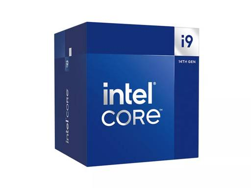
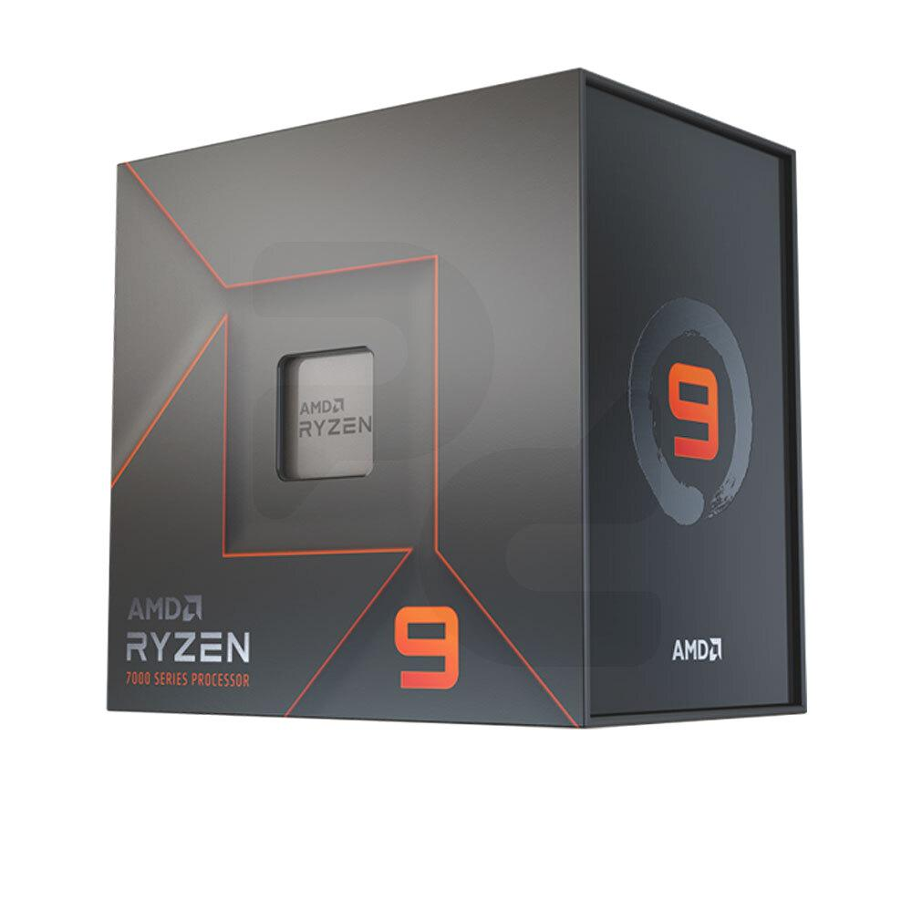
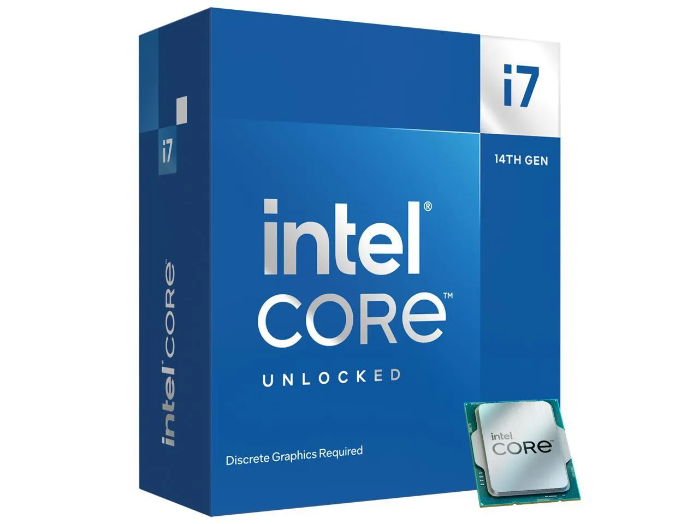
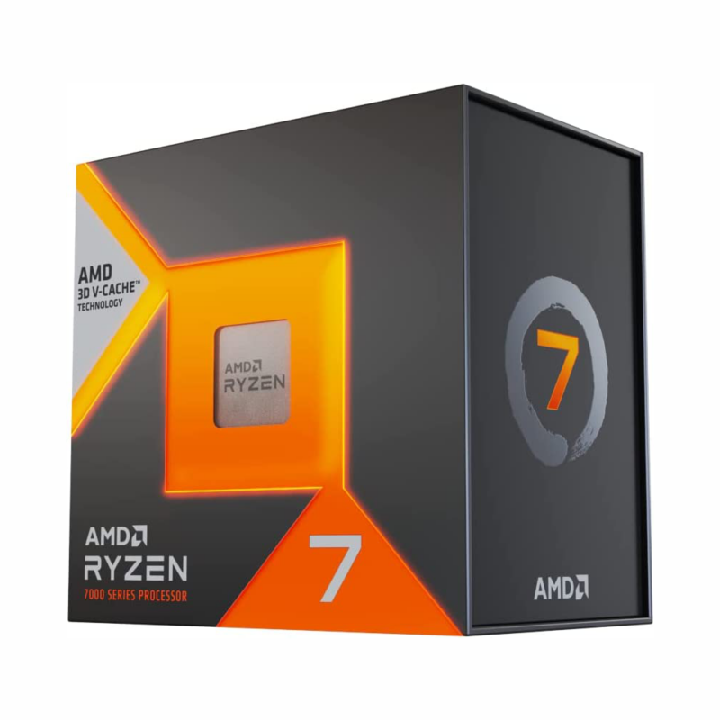

24 núcleos y 32 hilos. Frecuencia de hasta 6.0 GHz. El rey indiscutible para multitarea pesada y gaming extremo.

Tecnología 3D V-Cache para un rendimiento en juegos masivo. Eficiencia energética de última generación.

El equilibrio perfecto. 20 núcleos optimizados para creadores de contenido y gamers profesionales.

Considerado el mejor procesador puramente para gaming por su increíble velocidad y baja latencia.